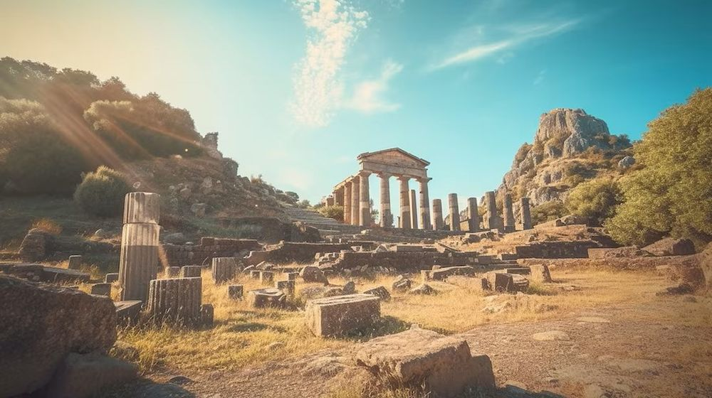

Descoperă Pompei - O fereastră în timpul Imperiului Roman
Pompei este un sit arheologic unic în Italia, oferind o privire în viața și cultura Imperiului Roman:
-

Amfiteatrul - Spectacole antice
Un amfiteatru impresionant unde luptele gladiatorilor și spectacolele publice se desfășurau în antichitate.
-

Vile romane - Reședințe luxoase
Vilele bine conservate dezvăluie stilul de viață al celor bogați și influenți din perioada romană.
-

Forumul - Centru civic
O piață centrală animată în timpurile romane, cu temple, săli de judecată și locuri de adunare.
-

Fresce antice - Artă în stil roman
Frescele colorate pe pereții caselor oferă indicii despre gusturile artistice ale vremii.
-

Băile publice - Ritualuri de igienă
Băile publice au fost un loc important pentru comunitate, oferind locuri de relaxare și igienă.
Concluzii
Pompei oferă o perspectivă unică asupra vieții romane antice, capturată în cenușa vulcanului Vezuviu.